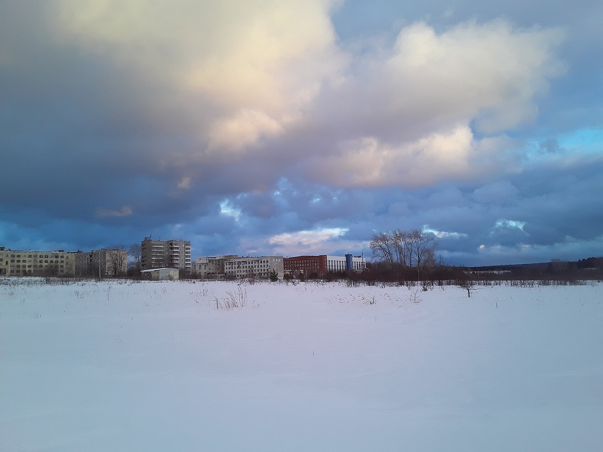

Fargo
1996 · 1 h 38 min ·
4K
4K, 5.1 · best of 2 copies · Icelandic subtitles
Ends at 22:19
58 min left
−10
+10
40:12
−57:48
OK
Pause
◀ ▶
Seek 10 s
▲
Buttons
▼
Options
Back
Hide
The frame is a stand-in for the film (CC0, Wikimedia Commons).